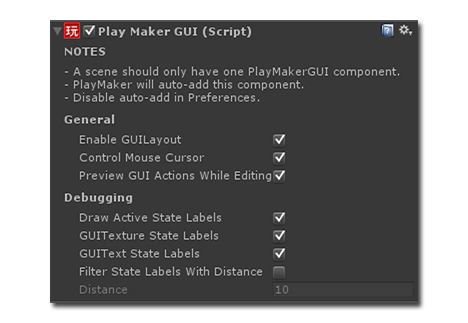

The PlayMakerGUI Component is used to manage some PlayMaker GUI features:

PlayMakerGUI batches all OnGUI calls by GUI Actions into a single OnGUI call for performance.
NOTE: OnGUI is an older GUI system in Unity. Except for quick tests, you're better off using the new Unity GUI system.
General
General Settings control the behavior of GUI Actions:
- Enable GUILayout: Check this if you use GUILayout Actions. Un-checking this can improve OnGUI performance.
- Control Mouse Cursor: Check this if you use Mouse Cursor Actions. Un-check this if you have scripts that control the cursor.
- Preview GUI Actions While Editing: Check this to see GUI Actions rendered in the Game View while you edit them.
Debugging
PlayMaker can draw debug labels in the Game View. Use these settings to control their behaviour:
- Draw Active State Labels: Check this to show the active state of FSMs as labels over the GameObject.
- GUITexture State Labels: Un-check this to hide state labels on GameObjects that use GUITexture components.
- GUIText State Labels: Un-check this to hide state labels on GameObjects that use GUIText components.
- Filter State Labels With Distance: This can be useful in a first person game where you only want to see the state of GameObjects near you.
- Distance: Distance used by previous setting (in scene units).
NOTES:
- State labels can also be disabled for each FSM in the Fsm Inspector panel or PlayMakerFSM Inspector.
- You can disable the auto-adding of PlayMakerGUI to the scene in Preferences.
- You can disable state labels in Debugging Preferences.
See Also: